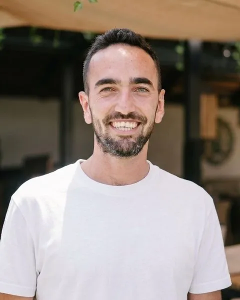

אני מגיע מוכן: לפני הפגישה אתם משתפים נתונים, ואני לומד אותם. בפגישה מתעמקים בלידים, באוטומציות ובמחירון.
500 ₪ · שעה וחצי
אם ממשיכים לבנייה, הסכום מקוזז מהמחיר.
03
תוכנית עבודה
יוצאים עם אסטרטגיה לצמיחת העסק: מה אתם עושים בעצמכם, ומה אני בונה בשבילכם, כמו דף נחיתה, חיבור CRM, אוטומציות או בדיקת נוכחות בגוגל.
המחיר לפי התוכנית שמסכימים עליה

מי אני
רועי גרימברג
מהנדס ומפתח שמלווה עסקים קטנים בטכנולוגיה, אוטומציה ו-AI, וגם באסטרטגיה ובצמיחה עסקית. אני מתחיל מהכלים שכבר קיימים, מפתח חדשים רק כשבאמת צריך, ומסביר כל פתרון בשפה פשוטה.
היום כל אחד יכול להרים מערכת בכמה שעות. החלק הקשה הוא להחליט מה המערכת צריכה לעשות.
שם נמצא הניסיון שלי: לאפיין איך ליד הופך ללקוח בעסק שלכם ואיפה הוא נתקע, עוד לפני שבונים משהו.
CRM ואוטומציהפיתוח וחיבור מערכות לסוכנויות ולעסקים, בהתאמה לתהליכים שלהם
עולם הכושרכלים לניתוח תוכניות אימון, וליווי טכנולוגי ועסקי של סטודיו ומאמנים
AI בשירות לקוחותהטמעה ופיילוט של סוכן AI במוקד תמיכה טכנית
רקע הנדסימערכות IoT ופיתוח אפליקציות לתהליכים תפעוליים בתעשייה
מהשטח
סיפורים מהשטח
ClickUp · n8n · Softr
סוכנות קריאייטיב
כשהמערכת הקיימת מגבילה: הסוכנות עבדה עם ClickUp, שלא תמך בחלק מתהליכי העבודה שלה.
אפיון משותף של תהליכי העבודה בסוכנות
אינטגרציה בין ClickUp למערכות הקיימות
הרחבת ClickUp עם n8n: טפסים ייעודיים ודוחות עלויות, מע״מ, מט״ח ותזרים. פחות זמן תפעול, ונתונים מדויקים ושלמים יותר
פורטל לקוחות ב-Softr: לקוחות הסוכנות רואים בעצמם את התקדמות המשימות, בלי לבקש עדכונים
Boostapp · WhatsApp
סטודיו ליוגה בדרום
מורה שמעבירה שלושה שיעורים בשבוע ועובדת עם Boostapp.
התנעה מחדש של העסק: מטרות, אפיון הסטודיו ואפיקי הכנסה נוספים
מחירון שמעביר לקוחות מכרטיסיות למנויים חודשיים
קמפיין חבר מביא חבר להגדלת הלידים
הכנסת לידים למערכת, שיעורי ניסיון וחזרה למתאמני עבר
חיבור וואטסאפ ל-Boostapp ואוטומציות לשימור ולהמרה
אין לי מילים להודות לך. בגובה העיניים, בסבלנות, בהכלה… רואה את הצרכים שלי, בקצב שלי, בשפה שלי.
מורה ליוגה, סטודיו בדרום
אני רק עכשיו מבינה כמה לקוחות פספסתי שהתעניינו ולא רשמתי אותם כליד.
אחרי שהכנסנו יחד את הלידים למערכת
שאלות נפוצות
מה שבעלי עסקים שואלים לפני שמתחילים
מה ההבדל בין שיחת היכרות לפגישת אבחון?
שיחת ההיכרות היא חצי שעה ללא תשלום: מכירים, ואני מסביר מה אני עושה. פגישת האבחון נמשכת שעה וחצי, ואני מגיע אליה מוכן, אחרי שעברתי על נתונים ששיתפתם, ובה מתעמקים בלידים, באוטומציות ובמחירון. ממנה יוצאת תוכנית עבודה.
מה זה אוטומציות, והאם העסק שלי צריך אותן?
אוטומציה היא פעולה שקורית לבד, בלי שמישהו צריך לזכור לעשות אותה. למשל: ליד חדש מהאתר נכנס ל-CRM ומקבל הודעה בוואטסאפ, והצעת מחיר שלא נחתמה מקבלת תזכורת. אם משהו נופל בין הכיסאות כשאתם עסוקים, כנראה שאוטומציה תחסוך לכם זמן ולקוחות.
למה לא לבנות את זה לבד עם AI?
אפשר, ולפעמים זה גם יעבוד. אבל מערכת שנבנית על תהליך לא נכון רק מאיצה את הטעות. רוב העבודה היא להבין איך העסק עובד ולאפיין את התהליך, והבנייה מגיעה אחרי זה. מי שרוצה לבנות לבד יכול להסתפק בפגישת האבחון ובתוכנית.
יש לי כבר מערכת. צריך להחליף אותה?
ברוב המקרים לא. אני מתחיל מהכלים שכבר יש לכם, כמו Boostapp, ClickUp, Google Sheets או וואטסאפ עסקי, ומוציא מהם את המקסימום.
איך נבנה הבוט בוואטסאפ?
ממלאים שאלון קצר על העסק: שירותים, מחירים, שעות, ומה הבוט לא עונה. מהתשובות אני בונה את הבוט, אתם בודקים ומאשרים את התשובות שלו, ורק אז מחברים אותו לוואטסאפ של העסק.
מה קורה כשהבוט לא יודע לענות?
הוא לא ממציא. הוא אומר לפונה שתחזרו אליו, ושולח לכם התראה עם הפרטים ומה נשאל. גם נושאים שבחרתם מראש, כמו בקשות להנחה או תלונות, עוברים ישר אליכם.
אפשר להתחיל רק מאבחון, בלי להתחייב להמשך?
כן. התוכנית שיוצאת מהאבחון שלכם, ואפשר ליישם אותה לבד.
כמה זה עולה?
שיחת ההיכרות ללא תשלום. פגישת אבחון: 500 ₪, ומקוזזת אם ממשיכים לבנייה. בוט בוואטסאפ: 1,000 ₪ הקמה ועוד 250 ₪ לחודש. ליווי חודשי: 500 ₪ לחודש, וליווי שבועי: 1,400 ₪ לחודש. בניית מערכות ואוטומציות מתומחרת לפי היקף, אחרי פגישת האבחון. כל המחירים לפני מע״מ.